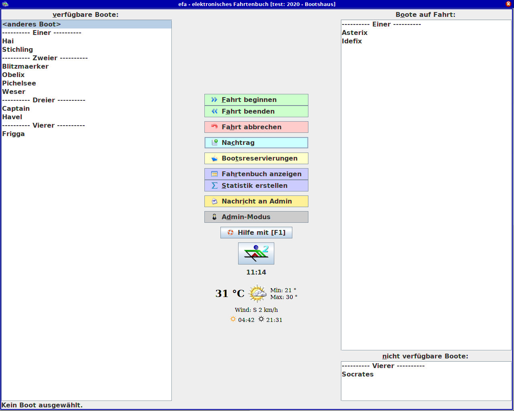

The efa Pi This is part of a short series documenting my efforts to migrate my rowing club's efa from a desktop to a raspberry pi. Please note that this was done for fun by a hobbyist. Anybody who is interested in a similar setup should consider directly using the efaLive version for Raspberry Pi. Now then, if you've been rowing in a German speaking country recently, then you're probably already familiar with the elektronischer Fahrtbuch and you can skip ahead. Otherwise, a few introductory words are in order. efa Rowing clubs generally need to keep track of their boats, members, and statistics. Instead of manually tracking this information, many boathouses use the open source software efa from N. Michael to take care of the bookkeeping (the project is hosted on github for anyone who wants to take a closer look).  The main window of the efa electronic log book efa is typically on a publicly available computer in the boat house. This computer can have a lot of uptime, hence the motivation in our club to move from a full PC to a more energy efficient Pi. Requirements: user friendly, yet robust There are naturally requirements for the hardware, but here I'll just give a brief overview of our requirements for the user interactions. The boat house computer doesn't have to do much beyond running efa. Security isn't a key concern. Everyone who has physical access to the computer should be able to interact with efa without being challenged by a log-in screen. However, we also don't want "raccoons in the system", it's best to avoid having anything tempting users to idly click around. We do have a club member who has admin rights for efa and wants to access the file manager but doesn't want to use the command line. So it should be easy for someone with admin rights, but no knowledge of the command line, to work with files. Getting started I'm going to assume that anyone reading this knows the basics for how to get a Pi running and how to use a command line interface (CLI). I used a Raspberry Pi model 3 B+ and flashed Rasbian Lite onto an appropriate SD card. Peripherals were a monitor connected to the HDMI port, a USB keyboard, and a USB mouse. The WiFi was configured to use the local network, and the OS updated before proceeding. Making a user Since a desktop environment will be needed later anyway, this step could be ignored for now and done later through the GUI. I wanted to stick with the CLI a bit longer. At this point, I would like to note that it is generally recommended to use more friendly scripts such as adduser and deluser instead of the built-in utilities useradd and userdel. I ignored this good advice and had some fun, but also a few false starts. $ sudo useradd -s /bin/bash -d /home/efa2 -m efa2 The -s flag sets the default shell for the user, which we want to be bash instead of sh. The -d flag defines the user's home directory, and the -m flag actually creates the home directory if it doesn't already exist. Note that the user cannot log in if it doesn't have a home directory. The -m flag also helpfully copies the 'skeleton directory' so we have our standard file and folders. Finally, efa2 is the name of the user being created. The last lines of the /etc/passwd file can be checked: $ tail /etc/shadow efa2:x:1001:1001::/home/efa2:/bin/bash This means there is a user called efa2 with an encrypted password in /etc/shadow, the user id is 1001, the group id is 1001, efa2's home folder is /home/efa2, and the default shell for efa2 is located at /bin/bash This is a bit misleading. The password will be encrypted and stored in /etc/shadow, but it doesn't exist yet. efa2 can't log in without a password, so that should be set with $ sudo passwd efa2. At this point, efa2 is a functioning user. Installs and Downloads I didn't have any strong feelings about which desktop environment or which login display manager to use. I settled on lxde and lightdm. The efa2 software also requires that Java, version 6 or later, is installed. I'll use zip later for making backup archives, and unzip is used to unpack the efa install package. Nano is a basic text editor. openbox is a stacking window manager and pcmanfm is the file manager At this point, we can also download the efa2 zip archive and move it to /opt/efa2 $ sudo apt-get install lxde-core lxterminal lightdm openbox $ sudo apt-get install openjdk-8-jre nano zip unzip xscreensaver $ sudo mkdir /opt/efa2 $ wget http://efa.nmichael.de/download/efa222.zip $ sudo mv efa222.zip /opt/efa2 Unpacking the zip file installs efa. Now it should be possible to launch efa by navigating to /opt/efa2 and running the efaBths.sh script, providing we also start an x session. But since we'll be needing the desktop and window manager for interacting with the file system through the GUI anyway, this seemed like a good point to reboot and have a look at the desktop. Configuring the desktop Post-reboot, there was the expected log-in screen, and I could log in as efa2. After having a look at the desktop environment, I decided to add a keyboard shortcut, add desktop icons, and make some changes to the autostart file. Keybindings The first thing I noticed was that neither Ctrl+alt+t nor Ctrl+shift+t opened a terminal. That could be problematic if I also hid the task bar and didn't have any other sort of launcher. So I went hunting for a way to add keyboard shortcuts. The file of choice turned out to be a lxde-rc.xml under ~/.config/openbox. After scrolling down to the keyboard section I added <keybind key="C-A-t"> <action name = "Execute"> <command>lxterminal</command> </action> </keybind> After saving and closing the file, the config file needed to be reloaded $ openbox-lxde --reconfigure and then the lxterminal could be launched by the shortcut Ctrl+alt+t Desktop Icons Next up were desktop icons for the file manager and the log-out dialog. Anything in /usr/share/applications or /usr/local/share/applications can be made into a desktop icon by creating a link .desktop file in the Desktop folder. You can check the pre-exisiting desktop files to get the icon name. The resulting pcmanfm.desktop file in efa2's Desktop folder contains: [Desktop Entry] Type=Link Name=File Manager Icon=system-file-manager URL=/usr/share/applications/pcmanfm.desktop and the contents of the logout.desktop file are similar. I also wanted to make a desktop icon for efa. In this case, there isn't an existing .desktop file in */share/applications, so that needs to be created first. Since I only want the applications to be available for the user efa2, I decided to make the application desktop file in /home/efa2/.local/share/applications. [Desktop Entry] Type=Application Name=efa Icon=/opt/efa2/doc/efa2.png TryExec=/opt/efa2/efaBths.sh Exec=bash /opt/efa2/efaBths.sh The TryExec line checks to see if the program is installed. The .desktop file should just be ignored if the file isn't installed. The desktop-database has to be updated for the new desktop file to work $ update-desktop-database ~/.local/share/applications/efa.desktop There's also a useful utility called desktop-file-validate that can give hints for reasons the desktop file might not be working. In my case, I initially forgot to include the 'Name' entry. $ desktop-file-validate ~/.local/share/applications/efa.desktop error: required key "Name" in group "Desktop Entry" is not present If the application file exists and is valid, then the link file can be made in ~/Desktop as before. An option dialog will appear when launching from the desktop. This can be avoided by opening the file manager, going to Edit->Preferences, and checking the 'Don't ask options on launch executable file' option. autostart and autologin At this point I felt comfortable removing the tool bar, aka the lxpanel. The LXDE autostart file is responsible for launching lxpanel. Simply commenting out the line @lxpanel --profile LXDE with a # is sufficient to prevent the tool bar from appearing for the efa2 user. The autostart file is also a good place to be for configuring a shell script to launch when the user logs in. Launching the efa software at log-in just required adding the line @/opt/efa2/efaBths.sh to the autostart file. Finally, I wanted to automatically log in to the efa2 user account upon booting. This time the relevant file was the lightdm config file, located under /etc/lightdm/ and sudo privileges were necessary for the edits. The config file very helpfully already contained everything I needed, just commented out. In the section [Seat:*] the following lines had to be uncommented autologin-guest=false autologin-user=efa2 autologin-user-timeout=0 and, of course, the autologin user had to be set to efa2. Power Management Finally, I poked around a bit looking for a way to change the power management settings so that we could have nice things like the screensaver and the display turning off. This seemed to fall under the jurisdiction of xscreensaver. The GUI for the power manager can be launched with xscreensaver-demo. The box for locking the screen was already unchecked. I then set timers for the pi to suspend/sleep and for the turning off the display. At this point I rebooted. The pi did indeed directly log into the efa2 user account, the efa software was directly launched, and there was no task bar. Closing the efa software (an action that requires admin rights) revealed my rather empty desktop with the functioning icons for the file system manager, efa, and log-out dialog. Feeling rather pleased with myself, I left the pi running and went to a celebratory walk. The lockscreen I returned from my walk to find the display turned off, as expected. A quick mouse jiggle revealed... the login greeter. This took me a silly amount of time to figure out. First I found the xscreensaver config file (~/.screensaver) that I previously changed through the GUI and around with the values to no avail. Then I tried toggling on the screenlock for xscreensaver to see what would happen. After enabling the screenlock through xscreensaver, I was challenged by two different login screens. Which was kind of neat, and made me realize that a different application was locking the screen. I disabled the screenlock from xscreensaver again and went off seeking the relevant files. The file /usr/bin/lxlock contained an if-elif-else block for determining which screen locker to use. There was quite a list, with light-locker preceeding xscreensaver. So I decided to try changing the configuration for light-locker. $ light-locker --lock-after-screensaver=0 --no-lock-on-suspend It should be noted that when setting these flags the shell session should belong to the user you want to set the flags for. I actually would like the lock screen to pop up if someone is logged into the admin account, so this was only done for the efa2 user. This had the desired effect. There was no longer a lock screen for the efa2 user after the screensaver started or the the display turned off Conclusions I wasn't expecting to feel like I really gained something by doing things like configuring a desktop and manually making a user. After all, these were simple tasks and I had some basic idea of how a Linux system is organized and how to use the command line. But I suppose it's typical that knowing a little bit about something also means being completely clueless about how clueless you are. At the end I was feeling confident enough to try my hand at writing shell scripts. But that is a story for another time.